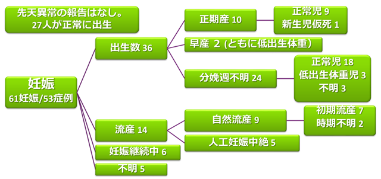

トシリズマブ使用中の妊娠例の報告（日本）
目的：妊娠中のTCZ曝露が，胎児と妊娠経過，新生児に与える影響を確認する
対象：2005年4月~2014年10月に中外製薬へ報告された本邦におけるTCZ投与後妊娠61例
方法：TCZの曝露時期, 妊娠転帰, 児の異常の有無についての情報を収集
| 患者背景 | 妊娠, n (%) (N=61) |
|
|---|---|---|
| 年齢（歳） | 平均（range） | 30.5（19-41） |
| 適応疾患 | 関節リウマチ 若年性特発性関節炎 キャッスルマン病 不明 |
53 (86.9) 1 (1.6) 2 (3.3) 5 (8.2) |
| 最終曝露時期 | 妊娠前（~最終月経） 妊娠初期（~妊娠13週） 妊娠中期（妊娠14-26週） 妊娠後期（妊娠27週以降） 妊娠中継続投与 不明 |
10 (16.4) 30 (49.2) 0 (0) 0 (0) 2 (3.2) 19 (31.1) |

- ●流産率は18％であるが、自然流産のリスク因子である,MTXの併用を半数に認めた.
- ●本解析では, 妊娠中のTCZ曝露に伴う自然流産および先天異常のリスク上昇は認めなかった．
- ●
Limitation⇒①サンプル数が61と少なく, コントロール群が設定されてない.
②母体の疾患活動性やTCZ曝露量, 曝露期間に関する十分な情報が得られていない症例が含まれる.
妊娠中のTCZ曝露に伴う自然流産および先天異常のリスク上昇は認めなかったという日本のデータがでたものの、妊婦に使用することの是非は、まだはっきりとはしていない